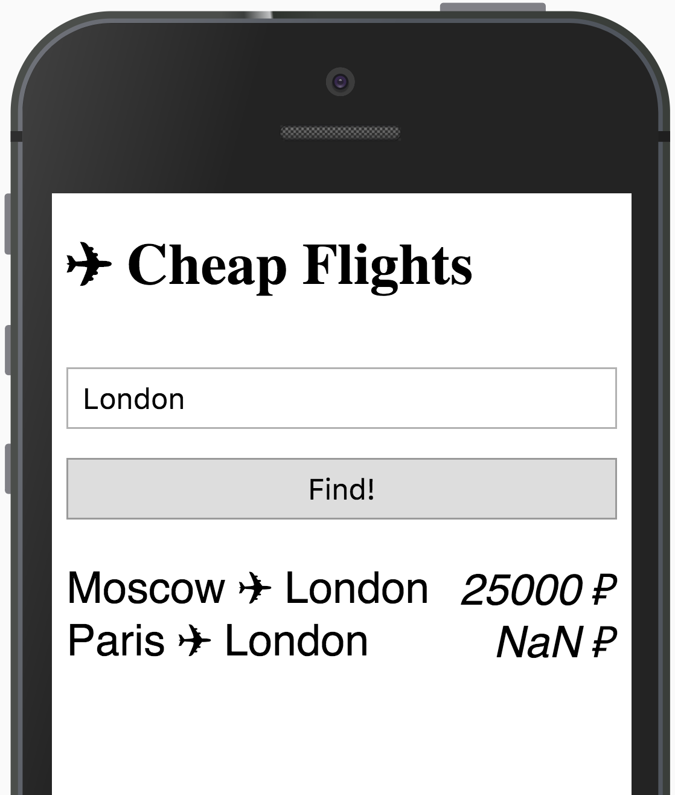
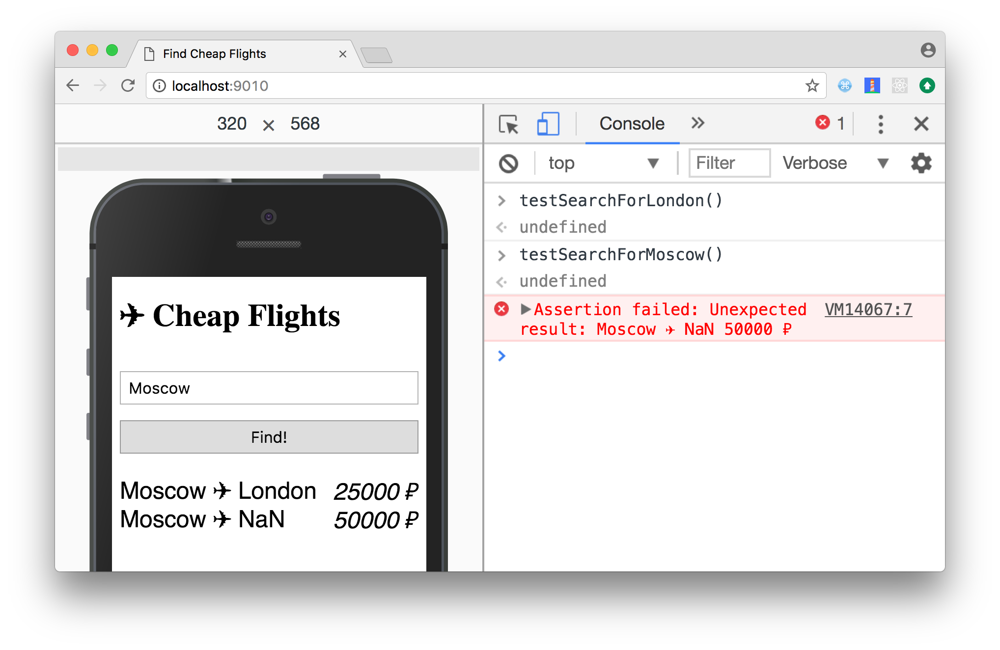

Тестирование
Роман Парадеев
Тестирование
– зачем тестировать и кто это должен делать?
Автотесты
– виды, инструменты, лучшие практики, методологии
Демо
– пишем тесты для веб-приложения
Ручное тестирование
Простое веб-приложение ...

... в котором нашёлся баг
Типичная отладка приложения
- Ввести запрос
- Нажать кнопку
- Увидеть ошибку
- Изменить код
- Обновить страницу
- GOTO 1
Ручное тестирование
Просто освоить
Отнимает много времени
– число сценариев со временем растёт – невозможно проверить сложные сценарии
Тест не повторить один-в-один
– легко ошибиться при выполнении сценария – сложно тестировать на нескольких платформах
Автоматизированное тестирование
Сценарий теста
- Ввести запрос
- Нажать кнопку
- Увидеть ошибку
- Изменить код
- Обновить страницу
- GOTO 1
Код теста
// Ввести запрос
enterQuery('London')
// Нажать кнопку
pressButton()
// Увидеть ошибку
compareResults([
'Moscow ✈︎ London 25000 ₽',
'Paris ✈︎ London 20000 ₽',
])Тестовая библиотека
function enterQuery(text) {
document.querySelector('input').value = text
}
function pressButton() {
document.querySelector('button').click()
}
function compareResults(results) {
const list = document.querySelectorAll('li')
for (let i = 0; i < list.length; i += 1)
console.assert(list[i].textContent === results[i],
`Unexpected result: ${list[i].textContent}`)
}Несколько сценариев
function testSearchForLondon() {
enterQuery('London')
pressButton()
compareResults(['Moscow ✈︎ London 25000 ₽',
'Paris ✈︎ London 20000 ₽'])
}
function testSearchForMoscow() {
enterQuery('Moscow')
pressButton()
compareResults(['Moscow ✈︎ London 25000 ₽',
'Moscow ✈︎ Paris 20000 ₽'])
}Запуск тестов
Автоматизированное тестирование
Сценарии зафиксифрованы в коде
– сложные сценарии, граничные случаи
Не страшно изменять код
– рефакторинг, обновление зависимостей
Можно использовать как документацию
– всегда согласована с кодом
Что и как тестировать?
Область действия теста
Отдельные компоненты
– атомарные части приложения: модули, функции, классы
Связи между ними
– проверка функциональности, затрагивающей несколько компонентов
Приложение в целом
– смотрим на приложение глазами пользователя
Признаки хорошего теста
Независимость от других тестов
– порядок выполнения не влияет на результат
Понятная структура
– подготовка / действие / проверка
Проверка исключительных сценариев
– все ли варианты использования кода предусмотрены?
Структура теста
Название – достаточно подробно раскрывает суть теста
Подготовка – создание и конфигурация объектов, заполнение БД
Действие – выполнение тестируемого кода
Проверка – сравнение полученных результатов с ожиданием
Пример: структура
test('search by arrival city', () => {
// Подготовка
const flights = new Flights([
{ from: 'Moscow', to: 'London', price: 25000 },
{ from: 'Moscow', to: 'New York', price: 50000 },
]);
// Выполнение
const filtered = flights.findByCity('London');
// Проверка
expect(filtered).toEqual([
{ from: 'Moscow', to: 'London', price: 25000 },
]);
});Пример: исключительные сценарии
flights.findByCity('London');
flights.findByCity(''); // пустая строка
flights.findByCity('london'); // нижний регистр
flights.findByCity(1); // другой тип данных
flights.findByCity(null); // ничего
flights.findByCity(' London '); // лишние пробелы
Test Driven Development (TDD)
Цикл разработки
- Тест на желаемое поведение
- Новые тесты не проходят
- Код, который чинит тест
- Все тесты проходят
- Рефакторинг
- GOTO 1
Разработка через тестирование поощряет простой дизайн и внушает уверенность
Демо
Ссылки
console.assert, async/await, Fetch API
Awesome JS: Testing Frameworks
Slack: @grumpy